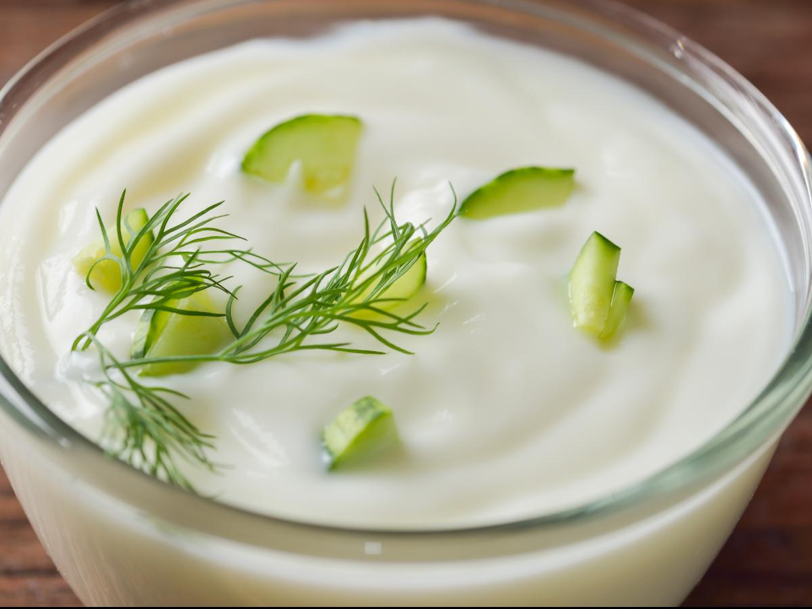

Description
Tzatziki, also known as tarator or cacık, is a dip, soup, or sauce found in the cuisines of Southeast Europe and the Middle East.
10 mins to prep / 25 mins to cook
Ingredients
- Olive oil: 27 grams
- Garlic: 1 clove
- Nonfat greek yogurt: 227 grams
- Cucumber: 1/2 medium
Steps
- PREPARATION: Peel, seed, and dice cucumber.
- Toss cucumber with 1/4 teaspoon each of salt and pepper in a colander and drain 15 minutes.
- Meanwhile, mince and mash garlic to a paste with 1/4 teaspoon salt, then whisk together with olive oil, yogurt, and 1/4 teaspoon pepper.
- Squeeze out any excess water from cucumbers with your hands, then stir cucumbers into yogurt mixture. Season with salt.